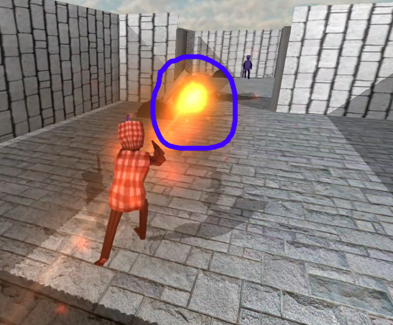
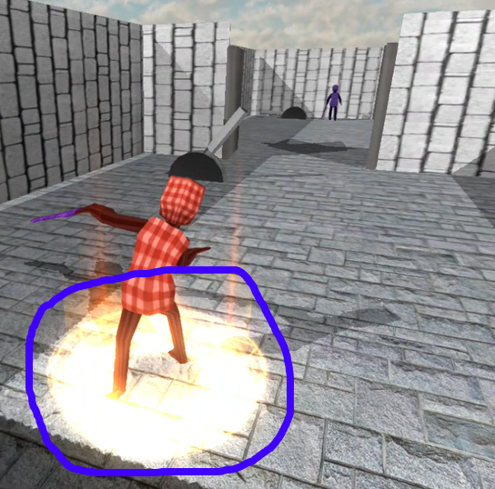
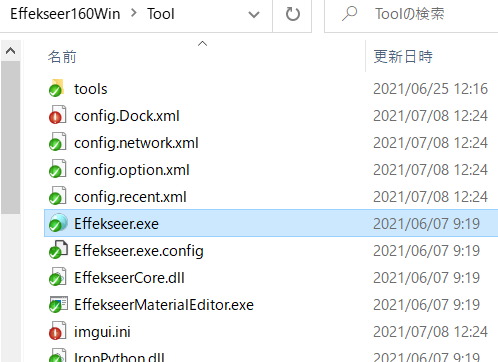
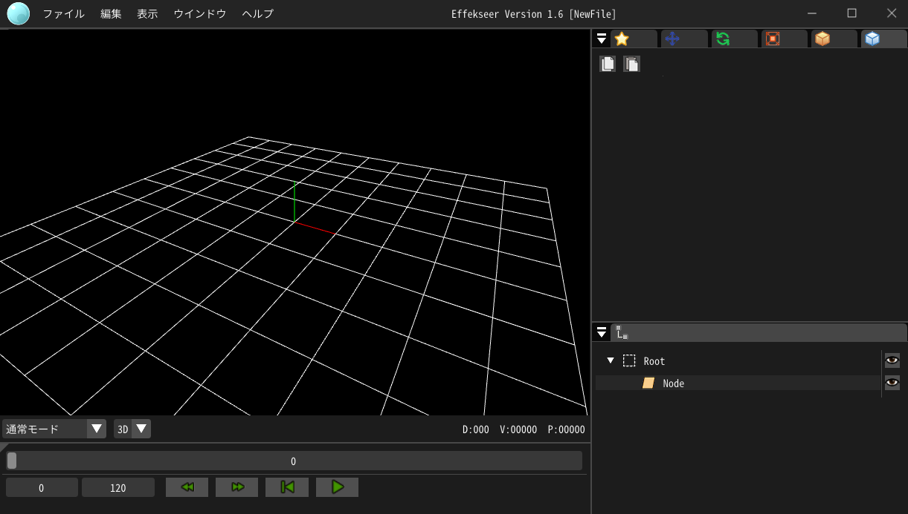
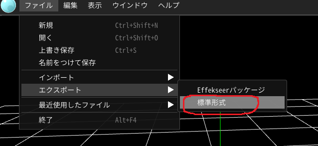

6.1 Effekseer
前回で、通常攻撃の実装ができました。
今回は、通常攻撃に「エフェクト」を追加したいと思います。
エフェクトというのは、以下のようなものです。


k2Engineでは、「エフェクト」の制作は、「Effekseer」というツールで行います。
tools/Effekseer160Win/ToolのEffekseer.exeでEffekseerが起動します。


エフェクトの制作方法については、ここでは割愛します。公式ドキュメントなどを参照してください。
エフェクトの保存方法について説明します。
「ファイル」→「エクスポート」→「標準形式」で保存します。

6.2 通常攻撃のエフェクト
それでは、通常攻撃に斬撃エフェクトを実装していきましょう。
Game.slnからVisual Studioを立ち上げてください。
エフェクトもサウンドと同じように使用します。
Player.cpp
#include "stdafx.h"
#include "Player.h"
#include "Game.h"
#include "FireBall.h"
#include "sound/SoundEngine.h"
#include "sound/SoundSource"
//CollisionObjectを使用するために、ファイルをインクルードする。
#include "collision/CollisionObject.h"
//EffectEmitterを使用するために、ファイルをインクルードする。
#include "graphics/effect/EffectEmitter.h"
.
.
.
bool Player::Start()
{
.
.
.
//「Sword」ボーンID(番号)を取得する。
m_swordBoneId = m_modelRender.FindBoneID(L"Sword");
//番号を指定して、efkファイルを読み込む。
EffectEngine::GetInstance()->ResistEffect(1, u"Assets/effect/efk/enemy_slash_01.efk");
return true;
}
Player.cpp
void Player::MakeSlashingEffect()
{
//攻撃エフェクトを発生させる。
EffectEmitter* effectEmitter = NewGO<EffectEmitter>(0);
//ResistEffect関数で指定した番号を指定する。
effectEmitter->Init(1);
//大きさを設定する。
effectEmitter->SetScale(Vector3::One * 11.0f);
Vector3 effectPosition = m_position;
//座標を少し上にする。
effectPosition.y += 70.0f;
//座標を設定する。
effectEmitter->SetPosition(effectPosition);
//エフェクトを再生する。
effectEmitter->Play();
SoundSource* se = NewGO<SoundSource>(0);
se->Init(3);
se->Play(false);
se->SetVolume(0.8f);
}
.
.
.
void Player::OnAnimationEvent(const wchar_t* clipName, const wchar_t* eventName)
{
//キーの名前が「attack_start」の時。
if(wcscmp(eventName, L"attack_start"))
{
//攻撃中にする。
m_isUnderAttack = true;
//エフェクトを発生させる。
MakeSlashingEffect();
}
//キーの名前が「attack_end」の時。
else if(wcscmp(eventName, L"attack_end"))
{
//攻撃を終わる。
m_isUnderAttack = false;
}
}
Player.cpp
void Player::MakeSlashingEffect()
{
//攻撃エフェクトを発生させる。
EffectEmitter* effectEmitter = NewGO<EffectEmitter>(0);
//ResistEffect関数で指定した番号を指定する。
effectEmitter->Init(1);
//大きさを設定する。
effectEmitter->SetScale(Vector3::One * 11.0f);
Vector3 effectPosition = m_position;
//座標を少し上にする。
effectPosition.y += 70.0f;
//座標を設定する。
effectEmitter->SetPosition(effectPosition);
Quaternion rotation;
//プレイヤーの回転。
rotation = m_rotation;
//回転させる。
rotation.AddRotationDegY(360.0f);
rotation.AddRotationDegZ(180.0f);
//回転を設定する。
effectEmitter->SetRotation(rotation);
//エフェクトを再生する。
effectEmitter->Play();
SoundSource* se = NewGO<SoundSource>(0);
se->Init(3);
se->Play(false);
se->SetVolume(0.8f);
}